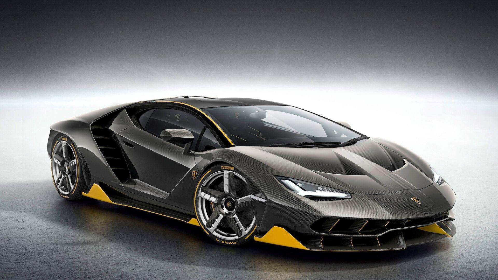

The development of modern technology has made cars smarter and safer. Modern cars use electronic systems, sensors, and computer programs to help drivers while driving. These technologies reduce human effort and increase road safety.
Cars today are designed not only for speed and comfort but also for environmental protection and energy efficiency. This makes modern vehicles more reliable and user-friendly.
which is your favorite car?
Modern cars are equipped with electronic control units that manage various functions such as engine performance, braking, steering, and fuel injection. These systems help the car run smoothly and efficiently in different conditions.
Digital dashboards, touchscreen displays, GPS navigation systems, and voice control features have made driving easier. Drivers can now access information and control many features with minimal effort.
Many modern cars also support mobile phone connectivity, allowing drivers to use calls, music, and navigation safely while driving.
Safety is one of the most important aspects of modern car technology. Basic safety features like seat belts and airbags are now combined with advanced safety systems to protect passengers.
Technologies such as Anti-lock Braking System (ABS), Electronic Stability Control (ESC), parking sensors, and rear-view cameras help prevent accidents and improve overall road safety.
Advanced driver assistance systems like lane departure warning and automatic emergency braking reduce the risk of collisions.
Electric and hybrid cars are becoming popular due to increasing fuel prices and environmental pollution. These cars use electric motors and batteries to reduce fuel consumption and harmful emissions.
Hybrid cars use both fuel engines and electric motors, while electric cars run completely on battery power. These vehicles are more eco-friendly and help conserve natural resources.
there are many websites from where you can buy cars.
here are some trusted websites, from where you can buy cars
click these icons to enter the link

The future of car technology includes self-driving cars and smart traffic systems. Self-driving cars use artificial intelligence, sensors, and cameras to drive without human control.
In the future, cars may be able to communicate with each other and traffic signals to reduce traffic jams and accidents. This will make transportation safer and more efficient.
Modern technology has transformed cars into advanced machines that provide safety, comfort, and
efficiency. With continuous innovation, cars will become even more intelligent and environmentally
friendly in the coming years.
Some of the cars of modern era are -
here are the images of some modern cars